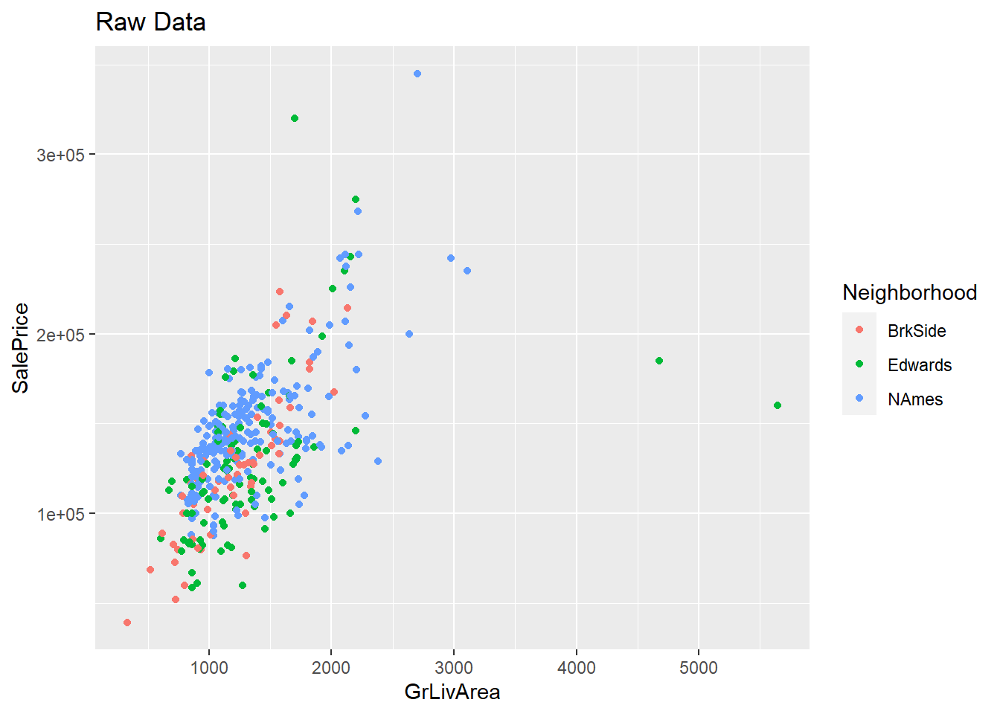
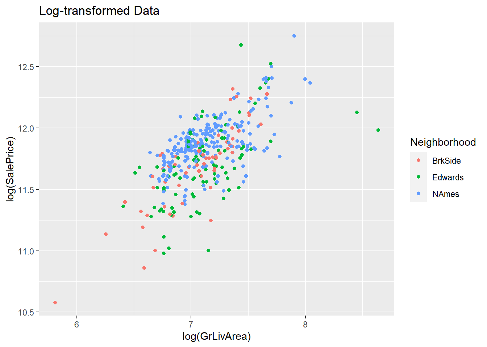
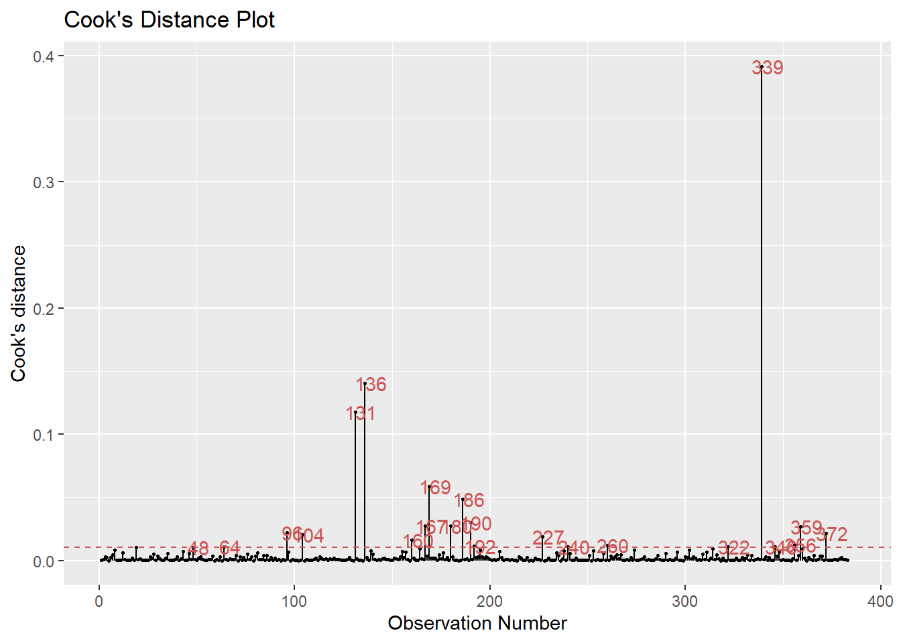
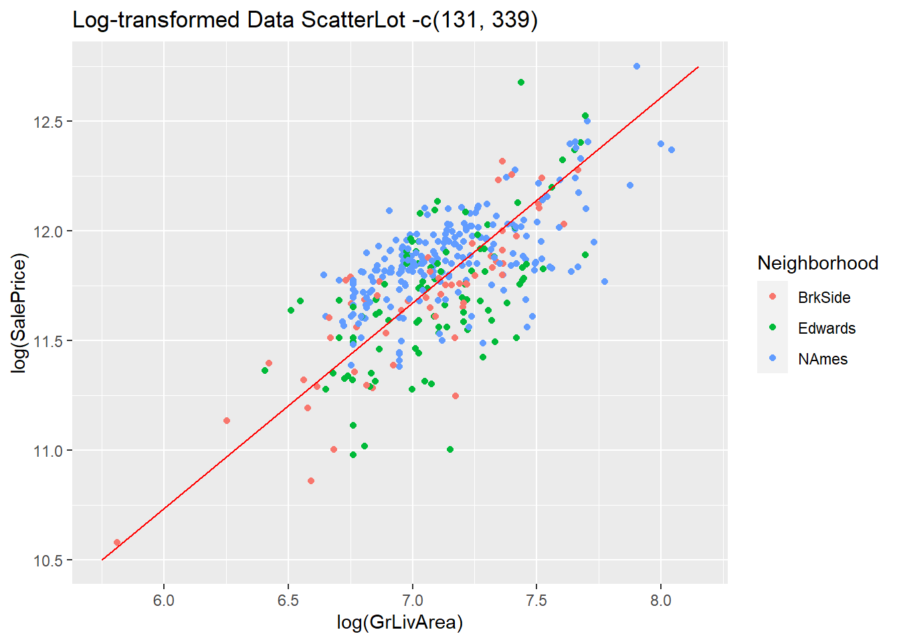
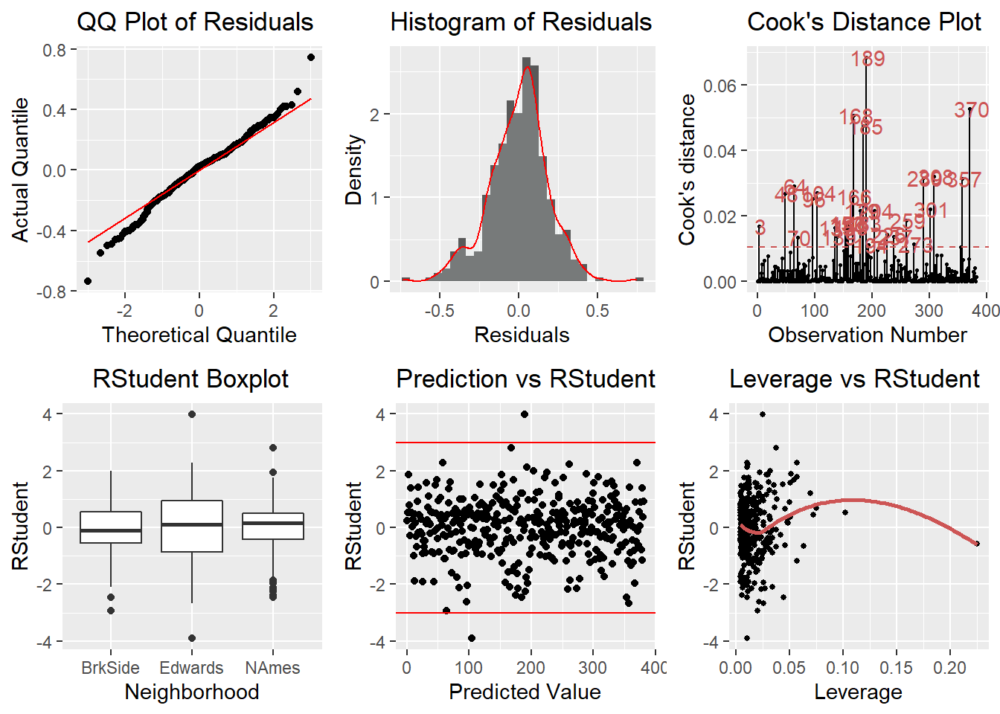

Introduction
What determines the value of a house?
Our final project for the Statistical Foundations course in the Southern Methodist University Master of Science of Data Science program was to challenge us to predict the final price of each home in Ames, Iowa from 2006 to 2010, making regression analyses using what we have learned in the course.
Raw vs Log-transformed Scatterplots

How does grade living area relate to sales price?
From an initial model, we can deduce from the R-Squared values below that, the log-transformed grade living area is about 42% effective at explaining log-transformed sales price of a house.
\[log(SalePrice) = β0 + β1log(GrLivArea)\]
## [1] "0.420370141901713 | 0.418848803691481"We can further hone our dataset with influential points analysis.

Observations 131 and 136 are then removed from the dataset.
The R-Square values of our new model proves that it performs slighty better, with grade living area effectively explaining 44% of sales prices of houses.
## [1] "0.443011621633085 | 0.44154199530494"The scatters on our new plot now appears more normalized, judging by the arbitrary diagonal red line.

What if neighborhoods are included?
The R-Squared values below proves that our full model performs the best, with Neighborhood added as an additive.
\[log(SalePrice) = β0 + β1log(GrLivArea) + β2Edwards + \] \[β3NAmes + β4Edwards*log(GrLivArea) + β5NAmes*log(GrLivArea)\]
## [1] "0.527926654806879 | 0.521632343537637"Final Model Assumptions

Sanity Check of Above 2 Models
There is enough evidence below to conclude that the latter model is superior (p-value < 0.05).
## Analysis of Variance Table
##
## Model 1: log(SalePrice) ~ log(GrLivArea)
## Model 2: log(SalePrice) ~ log(GrLivArea) + as.factor(Neighborhood) + as.factor(Neighborhood) *
## log(GrLivArea)
## Res.Df RSS Df Sum of Sq F Pr(>F)
## 1 379 15.832
## 2 375 13.418 4 2.4137 16.863 1.004e-12 ***
## ---
## Signif. codes: 0 '***' 0.001 '**' 0.01 '*' 0.05 '.' 0.1 ' ' 1Both models are evaluated 5 times using RMSE, R-Squared, and PRESS, respectively. We desire the lower RMSE, higher R-Squared, and lower PRESS. The latter model qualifies all three categories.
## [1] "0.203387941136873 | 0.445487375655191 | 16.028917038051"## [1] "0.189419154092284 | 0.515579561289575 | 13.9480700164513"